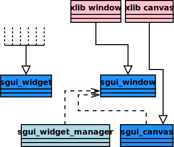

SGUI
Hacking SGUI
This chapter is intended to provide an overview and details of the
architecture and internal workings of SGUI for people who intend to make
changes or additions to SGUI.
Architectural overview

The architecture of SGUI is rather simple. The above image gives a rough
outline of the class hirarchy (yes, you read right, class hirarchy).
- Various widgets are derived from a common base class, the
sgui_widget.
- The sgui_window is actually a base class, derived by an
implementation for your platform.
The xlib window is only drawn as an
example.
- The window class only handles a window, it does not touch any widgets or
do any rendering.
- Rendering is done by sgui_canvas that the window owns an
instance of. The canvas object also has a root widget that all widgets
are attached to.
The canvas takes care of redirecting events to the
children and redrawing them on request.
- There are various canvas implementations (derived classes). The window
implementation must make sure to create an apropriate implementation.
The xlib canvas is only drawn as an example.
- Of course there are other classes, but those are only isolated, minor
helper data structures.
This is pretty much what happens inside the SGUI main loop:
- The platforms main loop implementation receives messages from the window
system and redirects them to the appropriate windows.
- The windows responds to the messages, translate them to SGUI events and
redirect them to their widget managers.
- The widget managers process the events and redirect them to the
appropriate widgets.
- The widgets process their events and do something.
- Some widgets decide that they need to be redrawn and tell it to their
responsible widget managers.
- The windows checks their widget managers whether there are widgets to be
redrawn.
- If there are widgets to be redrawn, the coresponding widget manager is
given a pointer to a canvas implementation used by the window.
- The widget manager initiates drawing and gives the pointer to the widgets
that need rerendering.
- The widgets use skinning functions to draw themselves.
- The windows present their canvases to the user.
Previous
Back to index
Next